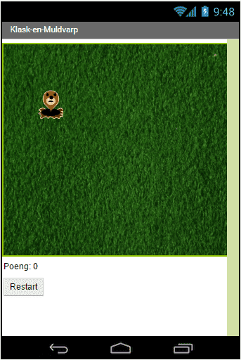
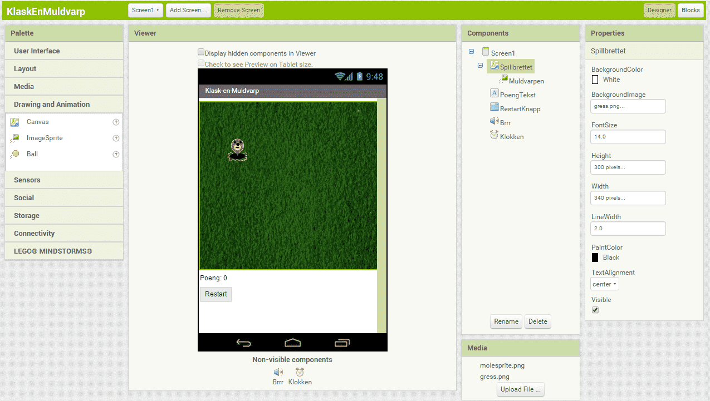
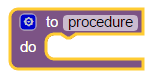
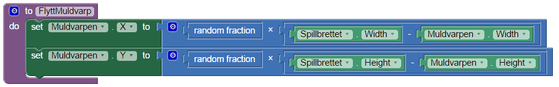
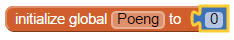
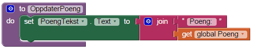
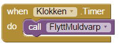
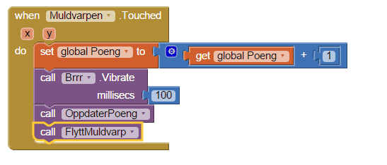
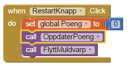

I denne oppgaven skal vi lage et veldig enkelt spill med litt animasjon. Det som skal skje er at en muldvarp hopper rundt på spillbrettet mens du prøver å trykke på muldvarpen før den hopper videre. Hvis du klarer å treffe muldvarpen får du poeng og mobilen vil vibrere. Om du trykker på restartknappen, starter spillet på nytt.
Vi skal nå lære litt om animasjon, hendelser og prosedyrer.

Steg 1: Gjøre klart spillbrettet
Det første vi trenger er en Canvas-komponent som tegner selve spillbrettet. Dette vil være området hvor muldvarpen hopper rundt på skjermen.
En canvas er bare en komponent som inneholder grafikk, den synes ikke selv, men vi kan legge til streker, sirkler, tekst, firkanter og bilder på canvasen.
Sjekkliste
Trykk på Height og skriv inn 300 ved siden av pixels og trykk OK.
Trykk på Width og skriv inn 340 ved siden av pixels og trykk OK.
Steg 2: Legge til poengtelleren og restartknappen
For å vite hvor mange poeng spilleren har, må vi legge til en tekst som oppdateres hver gang spilleren treffer muldvarpen. Restartknappen lar spilleren starte spillet på nytt.
Sjekkliste
Steg 3: Få mobilen til å vibrere
For å få mobilen til å vibrere når spilleren får poeng, må vi legge til en lyd.
Sjekkliste
Steg 4: Ta tiden
For at muldvarpen skal kunne hoppe rundt på brettet over tid, trenger vi å legge til en klokke. Klokken hjelper oss å jobbe med tid, for eksempel vite hvilken dato det er eller hva klokken er. Her skal vi bruke den til å fortelle spillet at det skal gjøre noe hvert halvsekund.
Sjekkliste
Steg 5: Muldvarpen!
Den siste komponenten vi mangler nå er selve muldvarpen. For å få en muldvarp som beveger seg, må vi legge til en ImageSprite. En sprite er en figur som kan bevege seg på skjermen inne i en canvas. Canvasen vår er spillbrettet som vi la til helt først.
Hver figur har en fart (Speed), retning (Heading) og intervall (Interval). Disse sier hvor fort den beveger seg, i hvilken retning og hvor ofte. En figur vet også når den blir trykket på. I spillet vårt, er farten satt til 0, så den vil ikke bevege seg selv. Istedet setter vi posisjonen ved hjelp av klokken.
Sjekkliste
Skjermbildet ditt burde nå se slik ut:

Steg 6: Få ting til å skje!
Vi har nå lagt til alle delene i appen vår. Du kan teste den på mobilen din, men du vil se at ingenting skjer. For å få noe til å skje på skjermen må vi legge til logikk, altså kode.
Koden er den magiske biten som gir applikasjonen din liv. Helt enkelt forteller koden spillet hva det skal gjøre med alle tingene vi har puttet på skjermen.
I AppInventor skriver vi kode ved hjelp av klosser. Disse klossene er kommandoer som settes sammen og ber applikasjonen å gjøre ting, for eksempel tegne et bilde eller vise en tekst.
Vi skal nå lage prosedyrer til spillet. Dette er en samling av flere kommandoer som har et navn og er satt sammen før de kalles.
Hvis du har en samling av klosser som trenger å bli kalt flere ganger i et program, kan du definere det som en prosedyre.
Da trenger du ikke sette sammen de samme klossene flere ganger. I stedet kan du kalle dem ved å legge inn en enkelt kloss.
Sjekkliste

Klossen FlyttMuldvarp har et område i midten som sier do. Det er her vi putter inn klossene som sier hva som skal skje når prosedyren kjører.
Muldvarpens X-posisjon skal være et tilfeldig tall mellom 0 og bredden på spillbrettet. Vi passer på å trekke fra muldvarpens bredde slik at hele muldvarpen får plass på gresset.
Muldvarpens Y-posisjon skal på samme måte være et tilfeldig tall mellom 0 og høyden på spillbrettet minus høyden på muldvarpen.
Klossen random fraction gir et tilfeldig tall mellom 0 og 1. Vi kan derfor gange denne med spillbrettets størrelse minus muldvarpens størrelse for å sette posisjonen slik vi vil.

Se hvordan klossene kobler sammen. Den første delen bruker Muldvarp.X til å sette muldvarpens horisontale posisjon. Verdien den får er resultatet av å gange en tilfeldig verdi mellom 0 og 1 med resultatet av spillbrettets bredde minus muldvarpens bredde.

Det vi vil at skal skje er PoengTeksten blir oppdatert med en tekst satt sammen av Poeng: og hvor mange poeng spilleren har.

Steg 7: Flytt muldvarpen etterhvert som tiden går
Neste steg er å få muldvarpen til å flytte seg. Dette er hvor vi skal bruke Klokken.
Klokken har en timer, denne timeren gir beskjed med jevne mellomrom bestemt av hva vi satte i TimerInterval i klokken.
Derfor vil den sende en hendelse hvert halvsekund, eller 500 millisekunder. Hendelser er ting som kan skje i appen din som for eksempel et tastetrykk eller at en timer går som her.
For å få noe til å skje når en hendelse sendes bruker vi en event handler. Denne sier hvilke klosser som skal kjøre når en hendelse sendes. Klokken vår har en kloss som er event handleren for timeren: when Klokken.Timer do.
Sjekkliste

Steg 8: Klask muldvarpen!
Den viktigste biten er å vite når noen trykker på muldvarpen, slik at vi vet når spilleren skal få poeng. Hvis du husker fra tidligere så sa vi at figurer vet når de blir trykket på.
Alt vi trenger å gjøre er å fortelle hva som skal skje ved å bruke event handleren for dette på muldvarpen. Denne hendelsen kalles Touched.
Sjekkliste
Videre vil vi at:
Poengvariabelen økes med 1 poeng.
Mobilen vibrerer i 1/10 sekund (100 millisekunder).
OppdaterPoeng blir kalt slik at poengene opdaterer seg på skjermen.
FlyttMuldvarp blir kalt slik at muldvarpen fortsetter spillet.

Steg 9: Start spillet på nytt
Den siste biten vi trenger å få på plass nå er å kunne starte spillet på nytt når vi trykker på restartknappen.
Knapper har en hendelse som heter click som sendes når knappen trykkes på.
Sjekkliste
Videre vil vi at når knappen trykkes skal:
Poengvariabelen gå ned til 0.
Poengteksten bli oppdatert.
FlyttMuldvarp bli kalt slik at muldvarpen fortsetter spillet.
Dette kan se slik ut:

Test appen på mobiltelefonen
Installer appen på mobilen din og prøv spillet.
Virker spillet slik du ville?
Utfordring: Dine egne tilpasninger
Hvordan kan du lage spillet enda bedre?
Kan du gjøre spillet vanskeligere?
Ting å prøve
Prøv å sette timeren til en lavere verdi. Hva skjer?
Forbedre denne siden
Funnet en feil? Kunne noe vært bedre? Hvis ja, vennligst gi oss tilbakemelding ved å lage en sak på Github eller fiks feilen selv om du kan. Vi er takknemlige for enhver tilbakemelding!